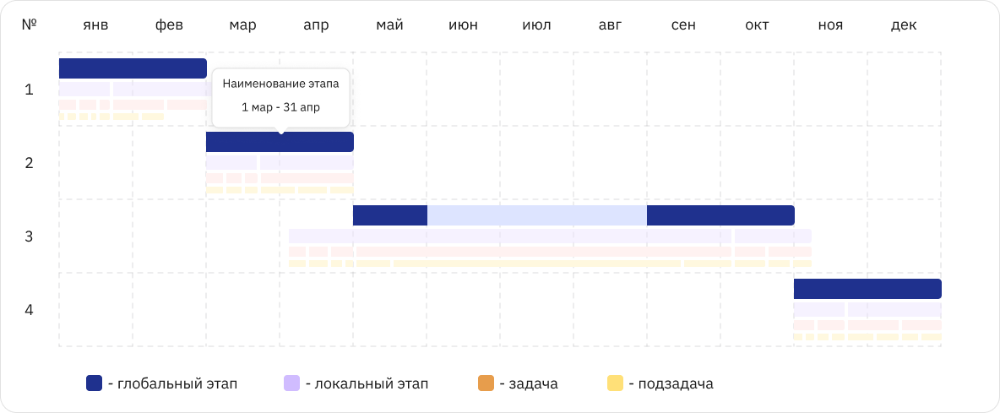

Folipro. Платформа поддержки проектного обучения
Сервис, который связывает студентов, кураторов и индустриальных партнёров вокруг проектной деятельности: биржа вакансий, витрина проектов, аналитика и поэтапное управление процессом.
Все скриншоты в кейсе кликабельны. Нажмите на любой, чтобы разглядеть детали.
Четыре модуля одной экосистемы
Биржа
Поиск вакансий, работа с заявками, распределение ролей в проекте.
Витрина
Упорядоченная демонстрация паспортов проектов, поиск, умная навигация.
Аналитика
Отслеживание показателей, действий студентов и наставников, управление на основе данных.
Управление
Поэтапная работа над проектом, трекинг процесса, аудит изменений.
Кейсы применения
Платформа тестировалась и внедрялась в нескольких вузах на реальных студенческих проектах с индустриальными заказчиками.
Что делала я
- Работа с обширной дизайн-системой.
- Построение пользовательских путей для четырёх ролей платформы.
- Анализ необходимого функционала для управления созданием и редактированием проектов со стороны разных пользователей.
- Правка уже существующих сущностей интерфейса.
- Создание новых решений с учётом потребностей пользователей.
- Работа с b2c-системой с разных сторон: дизайн не только для пользователей платформы, но и для кураторов (панель администратора).
Путь администратора: создание этапов
При создании нового проекта администратор устанавливает глобальные этапы работы. Для проектов, длящихся не один семестр, требуется каждый раз создавать этапы заново. Этот процесс можно оптимизировать, предоставив два пути действий: создать оригинальный этап или скопировать этапы предыдущего семестра с предварительным просмотром.
Таким образом я уменьшила временные затраты на выполнение повторяющихся задач, а также снизила вероятность ошибок при вводе. Автоматизация рутинных процессов приносит бизнесу экономическую выгоду.

Карточка этапа с двумя состояниями
Чтобы не перегружать панель текстом, описание этапа скрыто за иконкой информации. По клику карточка переворачивается и показывает подробности со скроллом.

Лицевая сторона

Обратная
Путь администратора: редактирование и команда
Сценарий описывает все возможные пути взаимодействия админа с окном редактирования проекта. После наполнения проекта этапами админу доступна страница редактирования, где можно продолжить создание этапов или изменить характеристики существующих.
Этот же сценарий подходит для тимлида, он обладает теми же возможностями, кроме редактирования глобальных этапов. Тимлид назначает ответственного за задачу, а тот, в свою очередь, ответственного за подзадачу. Исполнитель выставляет процент выполнения и отправляет результат на согласование, вышестоящий проверяет и подтверждает.

Может быть несколько ролей
Диаграмма Ганта для отслеживания сроков
Любой участник, может просматривать этапы работы. Отдельный график показывает их длительность. При наведении на шкалу или нажатии на цвет в списке появляется тултип с деталями.

Ответственный за подзадачу и участник проекта
Путь ответственного за подзадачу
Пользователь может выставлять процент выполнения и сохранять результат для проверки другим членом команды.
Путь участника проекта
Участник, прошедший регистрацию, но не получивший задач, может просматривать этапы работы и график их выполнения в наглядном виде.
Фильтры в витрине проектов
В панели фильтров все значения были представлены единым набором, то есть непонятно, к какому формату обучения относится запись «курс 1», «курс 2», если проект актуален и для бакалавриата, и для магистратуры.
Раскрывающаяся панель активных фильтров, где значения сгруппированы по категориям, а запись изменена на понятную, например: «Бакалавриат: курс 1».

До: плоский список чекбоксов

После: сгруппированная панель активных фильтров
Построение Юзерфлоу
Каждый сценарий был подробно построен от точки входа до всех развилок и модальных состояний, чтобы не упустить редкие кейсы взаимодействия и обсудить с командой логику переходов.

Участник хочет отметить процент выполнения задачи
Мобильная версия
Все ключевые сценарии: карточки этапов, диаграмма Ганта с тултипами, раскрывающиеся фильтры перенесены на мобильный экран без потери функциональности.


Спасибо за внимание
Если хотите обсудить проект или узнать больше о процессе работы, буду рада пообщаться.